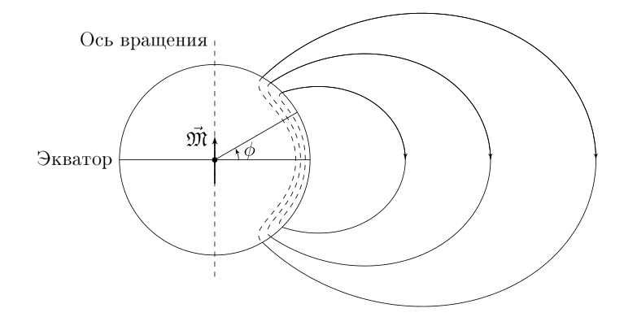
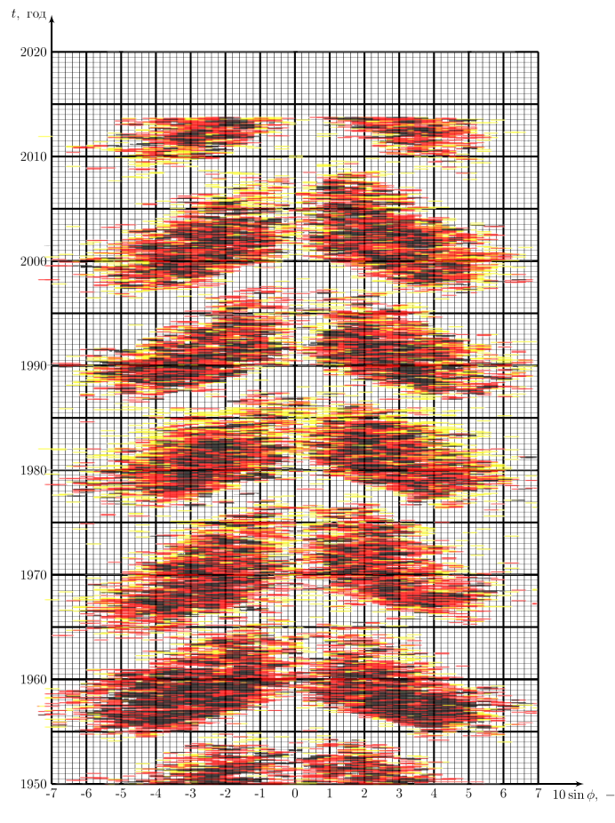

X22 (2022) — English translation
The Sun is a massive celestial body composed of plasma. Plasma has high electrical conductivity, so electric currents and, as a result, magnetic fields can arise in it. At the minimum of the solar activity cycle, it has an approximately dipole structure, while the field induction at the solar poles is maximum. Sunspots are observed on the surface of the Sun - dark areas on the Sun, the temperature of which is noticeably lower than the surrounding areas of the Sun's surface. The darkening in the spots is due to the suppression by the magnetic field of convective movements of matter and, as a consequence, a decrease in the flow of thermal energy transfer in these areas.
The sun is not a solid body, it consists of gaseous plasma. Points at different latitudes rotate with different periods, that is, the rotation of the Sun is differential. The rotation speed $\omega$ is greatest at the equator $\varphi=0^\circ$ of the Sun and decreases when moving towards the poles $\varphi=\pm90^\circ$. In a sufficiently wide vicinity of the equator, the formula \[ \omega(\varphi) = a - b \sin^2\varphi \] is applicable
At the moment of minimum solar activity, we will consider the magnetic field of the Sun outside its boundaries to be a dipole field with a magnetic moment $\vec{\mathfrak{M}}$. This magnetic moment is directed along the axis of rotation of the Sun. We will call the field components $B_r$ – directed along the radius, $B_\varphi$ – directed along the increase in latitude, $B_\lambda$ – directed along the increase in longitude.

Magnetic lines inside the Sun run perpendicular to the radius vector in a layer of thickness $H(\varphi) = H_0 \cos^2 \varphi$, where $H_0 = \xi R_0$, $\xi=0.05 \ll 1$ and only at the very exit from the surface they are rounded. Consider that the field $B$ inside the Sun is uniform over this thin layer in which the magnetic lines are localized. The magnitude of the flux $\Phi_0$ of the magnetic field through the northern hemisphere of the Sun is $8.0\cdot10^{13}~\text{Вб}$. The radius of the Sun is $R_0=6.96\cdot 10^8~\text{м}$.
Small magnetic fields (of the order of $B_e$) can be considered frozen into the plasma in the sense that the magnetic lines are distorted by the relative motion of the plasma. This means that if a magnetic field line passes through points $A$ and $B$ at the initial moment of time $t=0$, then at any other moment of time it will pass through them. Due to the fact that different points on the surface of the Sun have different angular speeds, the magnetic lines inside the surface of the Sun will be distorted. In this case, the external field will remain the same. We denote the moment of time described in part A as $t=0$.
A meridian is a line for which $\lambda=\text{const}$. This line is also obtained at the intersection of a sphere and a plane passing through the axis of rotation of the sphere.
Sunspots on the surface of the Sun form when the magnetic field inside the Sun exceeds $B_\text{крит}$. At each subsequent point, you can use a Maunder diagram, on which the proportion of the Sun's surface (the darker, the larger the proportion) covered by sunspots is indicated in color, and the axes are $t$ and $\sin \varphi$.

With a strong increase in the field $B$ inside the Sun, the model described earlier in part C stops working. The magnetic lines begin to twist around themselves and the dipole magnetic field is suppressed. Because of this, sunspots begin to disappear, because... the field strength decreases. As a result, the system returns to the initial state to the extent that the direction of the vector $\mathfrak{M}$ changes to the opposite. Thus our system is periodic.
Source: https://pho.rs/p/506